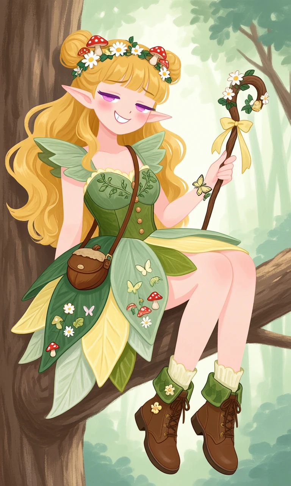
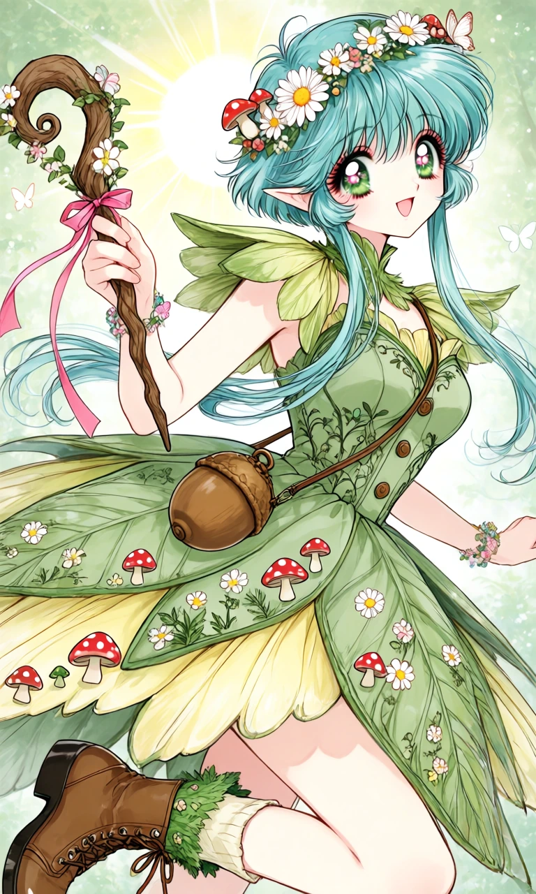

Daisy & Acorn

Outfit Prompt
She wears a whimsical woodland fairy dress made of overlapping leaf-shaped fabric panels in sage green, moss green, and soft yellow. The asymmetrical skirt resembles flower petals and forest leaves, with tiny embroidered mushrooms, daisies, and butterflies. Her bodice features delicate vine patterns, small wooden buttons, and fluttery leaf-shaped sleeves.
Accessories include a flower crown with daisies and miniature mushrooms, a tiny acorn-shaped shoulder bag, a butterfly bracelet, and a little wooden staff decorated with flowers and ribbons.
Her shoes are adorable brown lace-up ankle boots with leafy green cuffs, flower-shaped buttons, and cream-colored socks.
Outfit Examples



